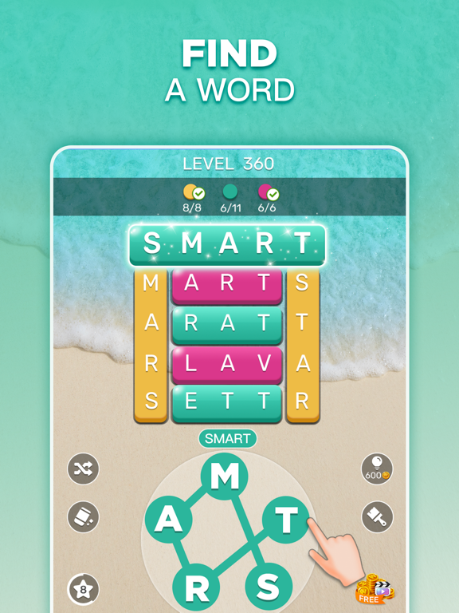
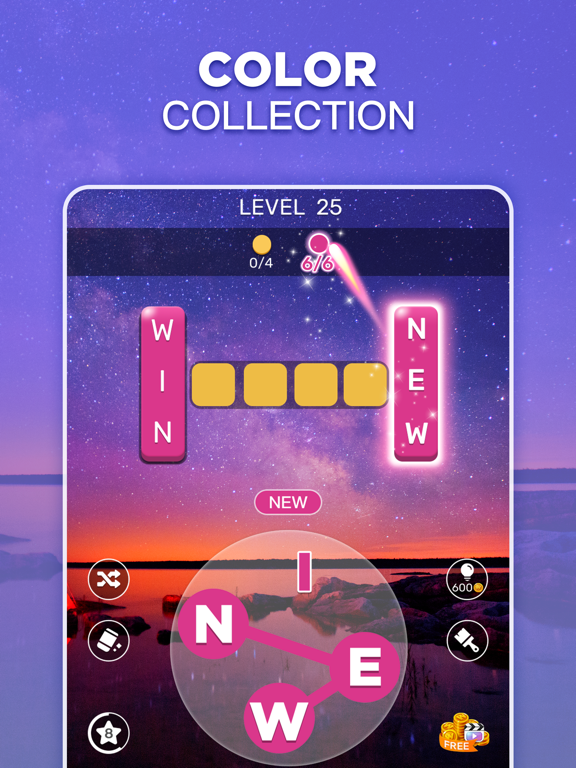
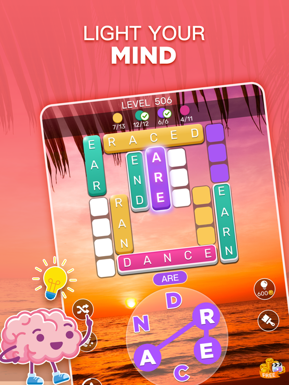
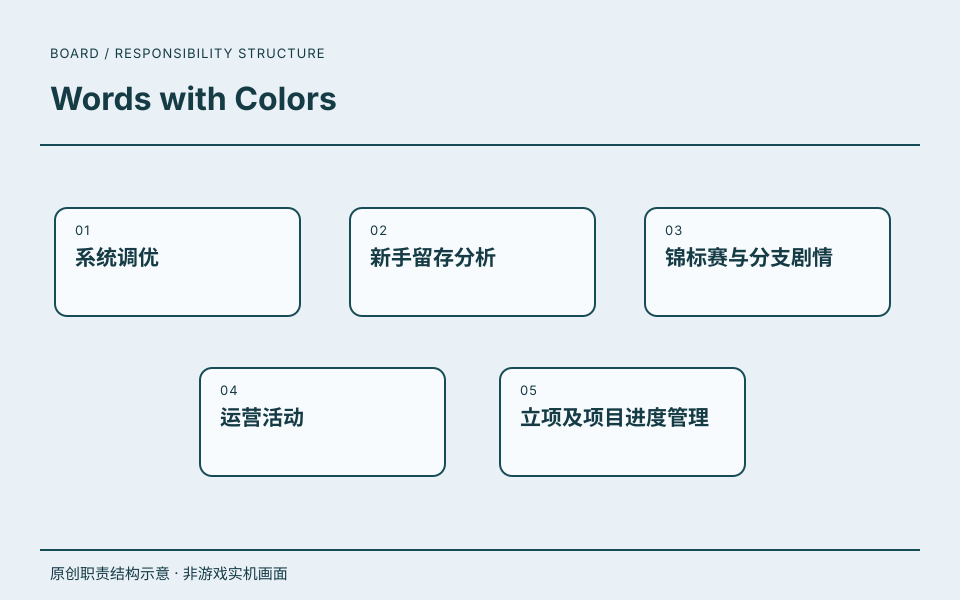

05 / 系统与推进看板 · PROJECT 02
Words with Colors.
参与颜色目标拼词游戏，负责图鉴收集系统设计，把关卡收集、主题照片解锁和奖励反馈连成一条成长路径。
任职角色沿用履历记录；具体贡献按项目资料区分，共同职责不逐项归为单个项目的独立成果。
拼出单词，完成颜色目标
Words with Colors 在海外商店介绍中也称 Color Master。玩家在字母轮盘连出单词，把拼词与指定颜色目标一起完成。单词拼得对，盘面还要满足本关的颜色要求。






一局怎样解
- 先看关卡要求：查看盘面空位与待收集的颜色，判断优先拼哪一组字母。
- 从轮盘连字：用给出的字母组成英文单词，正确的词填入盘面，颜色目标随操作推进。
- 卡住时换个解法：用提示找线索，或用橡皮擦调整盘面，继续寻找符合当前颜色目标的组合。
我负责的图鉴收集方案
我撰写《图鉴收集系统》，把主线关卡中的收集物变成跨关目标。玩家完成关卡收集后，可以在图鉴里看到离下一张主题照片还有多远。
- 让收集进度有去处：关卡中取得的收集物推进照片解锁，达成条件后揭开照片并反馈奖励。
- 区分照片状态：已解锁可以查看大图，正在收集的照片可查看条件，尚未开放的照片提示先完成前一张。
- 用动效说明发生了什么：新内容通过入口提示，进入图鉴后依次看到进度补满、照片解锁和获得奖励，让玩家能理解本次变化及接下来的目标。
MY WORK / DESIGN VALUE
这段任职的工作与价值
本项目参与记录已确认，以下是公司任职共同职责，未逐项确认本项目专属分工。只使用共同任职职责；Wordvillas 署名文档不作为本项目贡献。
- 01
系统调优与新手体验分析
- 具体工作
- 贝塔任职职责包含系统调优、新手留存分析与运营活动；具体到本项目的方案分工尚未逐项确认。
- 工作价值
- 呈现从体验问题进入设计调整的岗位经验，不用其他项目的署名方案代替本项目产出。
- 02
立项与研发节奏推进
- 具体工作
- 在公司阶段承担立项及项目进度管理，具体项目专属交付与业务效果未在本页新增主张。
- 工作价值
- 体现设计之外的项目组织职责，说明可以连接方案设计与研发推进，而不把职责等同于已验证业绩。
职责依据本人履历与确认；原图补充设计证据，经营结果另行说明来源与口径。
查看完整公司经历 ↗
高级系统策划
参与颜色目标拼词游戏，负责图鉴收集系统设计，把关卡收集、主题照片解锁和奖励反馈连成一条成长路径。
工作职责
- 01系统调优
- 02新手留存分析
- 03锦标赛与分支剧情
- 04运营活动
- 05立项及项目进度管理
参与项目
项目记录
《Words with Colors》列于这段任职经历中。
- 任职公司
- 北京贝塔科技股份有限公司
- 角色
- 高级系统策划
- 时间
- 2020.03—2021.02
任职、角色与职责依据本人履历及确认。图示是本站原创的职责结构表达。